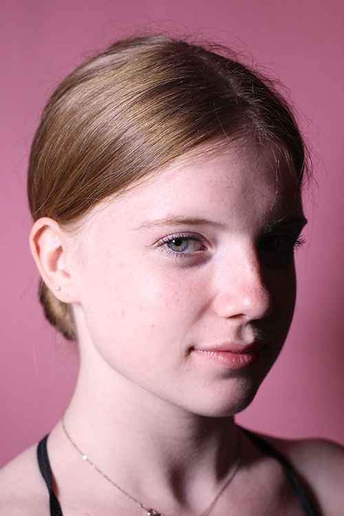
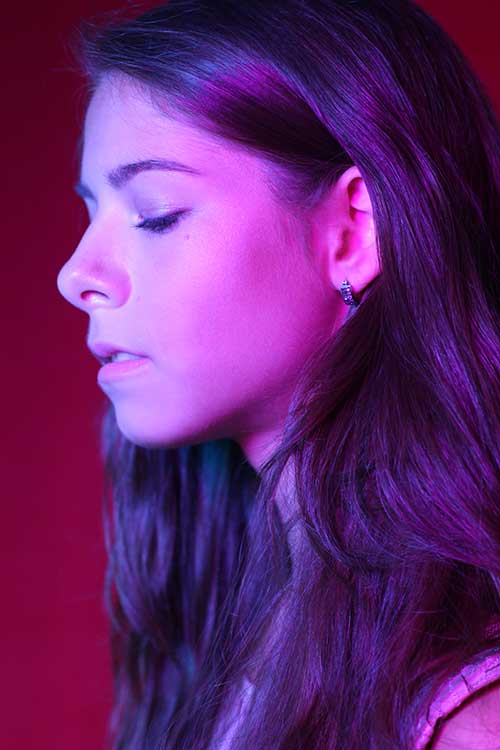
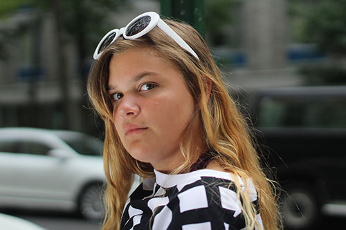

Dancer Portrait In Studio | 2018

Headshots using LED lights with pink and purple color gels | 2018

Headshots using LED lights with blue and purple color gels | 2018

Black and White Fashion Photography | 2018

Angel in Darkness | High Exposure Photography using Flashlight | 2018

Street Fashion Portrait Photography In NYC | 2018